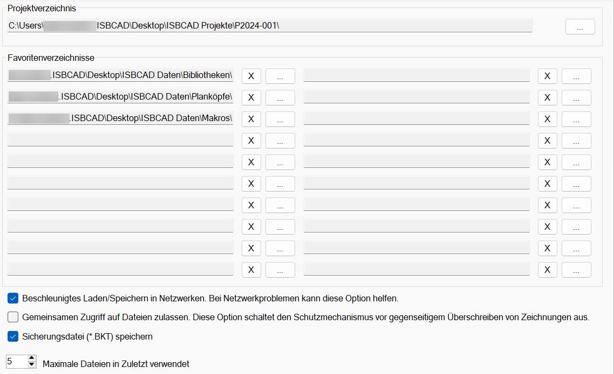
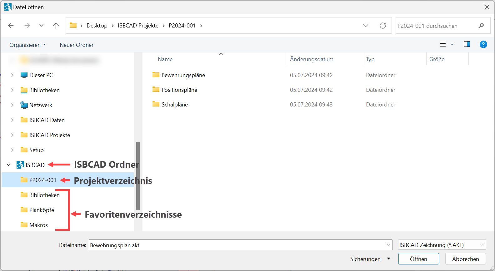

")

Optionen zum Öffnen und Speichern von Zeichnungen.

Projektverzeichnis
Voreingestelltes Projektverzeichnis. Beim Speichern neuer und schreibgeschützter Zeichnungen wird der hier festgelegte Pfad vorgeschlagen.
|
Öffnet die Dateiauswahl. |

Favoritenverzeichnisse
Auswahl der Favoritenverzeichnisse, um auf häufig genutzte Dateipfade schnell zugreifen zu können.
|
Öffnet die Dateiauswahl. |
Entfernt das Favoritenverzeichnis aus der Favoritenliste. |
Projektverzeichnis und Favoritenverzeichnisse im Windows-Explorer
Der Ordner wird im Windows Explorer angelegt, sobald ein Projekt- oder Favoritenverzeichnis angegeben wurde. Das Projektverzeichnis wird immer an oberster Position angezeigt, danach folgen die Favoritenverzeichnisse.
·Das Verschieben und Umbenennen von Ordnern entfernt sie aus der Dateiauswahl. Aktualisieren Sie die Dateipfade in diesem Dialog, um sie wieder anzuzeigen.
·Das Projektverzeichnis und die Favoritenverzeichnisse werden im aktiven Profil gespeichert. Abhängig vom gewählten Profil stehen beim Speichern oder Öffnen von Zeichnungen die entsprechenden Verzeichnisse zur Verfügung.
 |
Beschleunigtes Laden/Speichern in Netzwerken
Setzen Sie einen Haken in die Checkbox, um in Ihrem Netzwerk das Lesen und Schreiben von Daten zu beschleunigen.
Gemeinsamen Zugriff auf Dateien zulassen
|
Es wird keine [*.LKT] geschrieben. Die Zeichnung kann beliebig oft geöffnet werden. Mehrere Anwender können im Netzwerk dieselbe AKT-Zeichnung öffnen, bearbeiten und speichern. Die Datei kann von jedem Anwender überschrieben werden. |
|
Es wird verhindert, dass die Zeichnung von mehreren Anwendern gleichzeitig bearbeitet werden kann und beim Speichern eventuell Informationen verloren gehen. Wenn Sie versuchen, eine bereits geöffnete Zeichnung zu öffnen, wird eine entsprechende Meldung mit Informationen zum aktuellen Bearbeiter eingeblendet. In der Meldung haben Sie die Möglichkeit, die Zeichnung schreibgeschützt zu öffnen. Die LKT-Datei wird im Ordner gespeichert, in dem sich die geöffnete AKT-Datei befindet. Die LKT-Datei kann nicht gelöscht werden. Nach dem Schließen der AKT-Datei wird die LKT-Datei wieder entfernt. |


Siehe auch: Schutzmechanismus - LKT
Sicherungsdatei [*.BKT] speichern
|
Beim Speichern einer Zeichnung unter dem bisherigen Dateinamen wird eine Sicherungsdatei mit gleichlautendem Namen (*.bkt) angelegt. Diese Sicherungsdatei enthält immer den letzten Speicherstand der Zeichnung. Die BKT-Datei können Sie mit gleichlautendem Namen im AKT-Format wieder abspeichern. |
|
Beim Speichern einer Zeichnung unter dem bisherigen Dateinamen wird der vorherige Datei-Inhalt überschrieben. Es wird keine BKT-Datei angelegt! |
Siehe auch: Sicherungsdateien; Zeichnung speichern; Zeichnung öffnen
Maximale Anzahl in Zuletzt verwendet
Hier können Sie die Anzahl (max. 20) der zuletzt verwendeten Dateien im Datei-Menü angeben:
|

Tipp: Mit einem Rechtsklick auf einen Eintrag können Sie die Datei in einer neuen Instanz öffnen oder den Dateispeicherort im Windows-Explorer anzeigen.
|

Zugehörige Referenz: